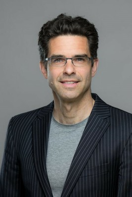

The Mathematical Institute at the University of Freiburg has been home to my research group since 2008. On the one hand, we like interdisciplinary research and teaching more than some of our colleagues, but on the other hand, we always come back to stochastics as the main focus of our work.
My research has three goals:
Projects
Research topics
Please write an email if you want to contact me.
Abteilung für Mathematische Stochastik
Albert-Ludwigs University of Freiburg
Ernst-Zermelo-Straße 1
Zimmer 233
D - 79104 Freiburg
Tel: +49-761-203-5667
Fax: +49-761-203-5661
E-Mail: peter[dot]pfaffelhuber[at]stochastik[dot]uni-freiburg[dot]de